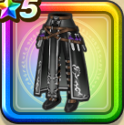

黒嵐のローブ下
攻略班 6.5点 / 魅了耐性+5%攻撃減耐性+5%ギガンテスへの耐性+10%魅了耐性+5%バギ属性斬撃・体技ダメージ+3%
くわしい特徴
【レベル別習得スキル】 Lv1魅了耐性+5% Lv8さいだいHP+5 Lv10攻撃減耐性+5% Lv12ギガンテスへの耐性+10% Lv15バギ属性斬撃・体技ダメージ+3% Lv18魅了耐性+5% Lv20【レンジャー】攻撃力+5 Lv23さいだいMP+5 Lv25守備力+7 【限界突破スキル】 1凸攻撃減耐性+10% 2凸守備力+5 3凸きようさ+5 4凸さいだいHP+5